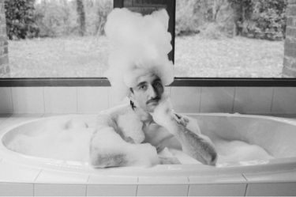
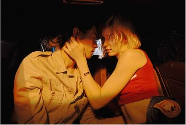

LES ŒUVRES
ALICE MOITIÉ POUR MYD ET ED BANGER
Dans la continuité de sa collaboration avec Myd et Ed Banger, Alice Moitié a réalisé une série intitulée Diary, sorte de making-of en coulisses du clip All Inclusive.
Son travail se distingue par une esthétique franche et assumée, ainsi que par une grande maîtrise du traitement de l’image.
On retrouve ce style dans ses portraits, par lesquels Alice s’exprime avec talent : Nicolas Bedos dans une baignoire par exemple, Victoria dans sa cuisine. De la crème de modèle certes mais qui ne fait pas tout car la photographe est douée.
Ne revendiquant pas de technique particulière, ses photos transmettent des impressions à la fois pop et naturaliste. Pour elle la photo semble être une grande source de fun, et ses shootings, qui ne se ressemblent pas, des parties de plaisir.


